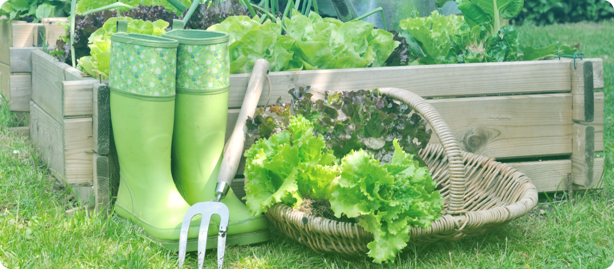
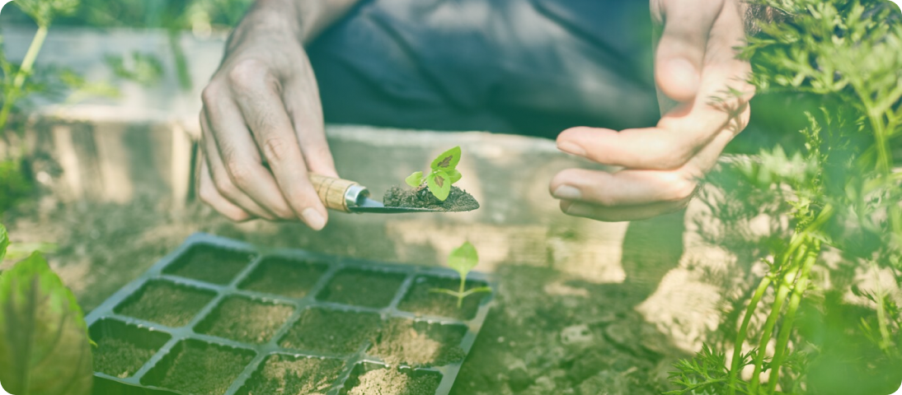

Вот так просыпаешься в одно прекрасное утро, выходишь
на балкон и застываешь в озарении — здесь должно быть патио! Чтобы с розмарином, лавандой, базиликом… И лимонад
с собственной мятой в ленивый жаркий вечер. Ничего,
что последний раз был на даче в десятилетнем возрасте и мечтал, как на нее упадет метеорит. Уж в этот раз наверняка будет приятнее и интереснее... Нет, это не старость.
Это суперпопулярный тренд! И даже, пожалуй, не мода,
а необходимость — результат текущей стрессовой пятилетки.
Модно-огородно

Не забудьте обзавестись парой модных резиновых сапожек

Евсения МалиноваКризисный психолог
«Всплеск интереса к садоводству — итог возросшей психологической нагрузки, действенный способ «заземления». Занимаясь растениями, люди фокусируются на чем-то материальном, получают ощущение контроля над ситуацией, уходят от рутины.
Кроме того, сажая семечко в землю, мы не знаем, получится
что-то или нет, но именно это предвкушение дает даже более красочные эмоции, нежели результат. Оно дает надежду. Неудивительно, что люди «нервных» профессий находят себя
в садоводстве. Если погуглите, то встретите немало громких имен: актеров, музыкантов, политиков — в рядах садоводов-любителей. А кое-кто превратил увлечение в доходный бизнес. Например, вы знали, что новоиспеченный король Карл III вот уже 40 лет лично занимается органическим садоводством в своем поместье Хайгроув, выпустил об этом книгу и получает более 3 миллионов фунтов.
Еще больше душевных статей у нас в Телеграм-канале
Ваш сад — ваши правила
Не бойтесь и не сомневайтесь. Главный продукт от всей этой возни с землей, семенами, рассадой вы получите в любом случае – испытаете положительные эмоции, расслабитесь, проведете время наедине с собой или в кругу близких по духу, отвлечетесь
от повседневности. Поэтому здесь нет каких-то критериев успеха: ваш сад/балкон/подоконник – ваши правила. Можно найти прелесть даже в сорняках. Немного терпения – кажется, мы все забыли, что такое естественное течение жизни, а природа пока еще все помнит.

Ваши зеленый друзья будут всегда с вами!
Неважно, каким будет ваш первый сад – гектар в поле, грядка
в парке, клумба у подъезда или несколько горшков с зеленью
на балконе. Важно, что он помогает отдохнуть душой, восполнить утраченный ресурс. Расскажите в наших социальных сетях ,
а какие у вас отношения с «зелеными друзьями»? Что для вас значит дача: трудовая повинность, место силы или пока новый загадочный мир?